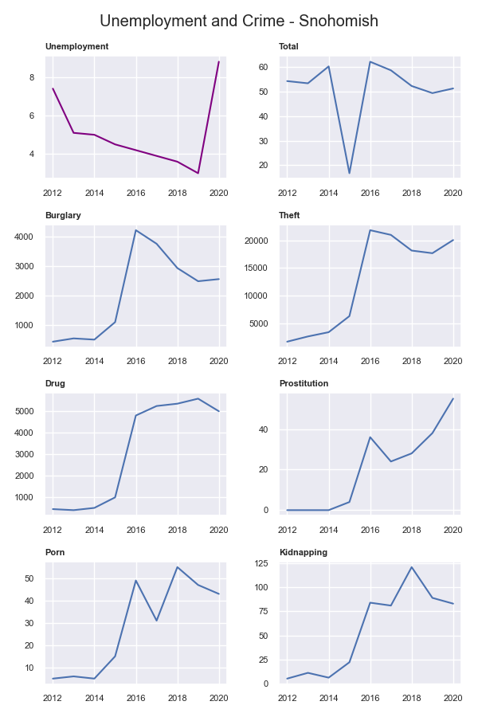
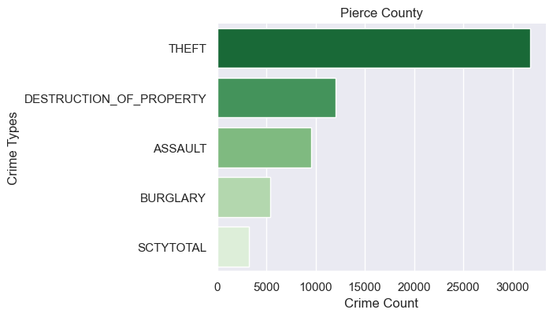

Analyzing Factors
Related to Crime Rates in Washington State Counties
Authors: Iris Zhou, Caroline Ding, Katherine Liu
Summary of Questions & Results
Our analysis focused on three areas of interest: types of offenses reported, unemployment rate, and population density. We analyzed how each of these factors relate to location and crime rates.
Types of criminal offenses:
-
What types of crime occur most frequently in different counties?
Theft is the most frequently occuring type of offense in most counties. Assault, destruction of property, and burglary are among the second most frequently occuring types of crime.
-
How does the proportion of types of criminal offenses vary across counties?
The proportion of thefts as compared the proportion of other offenses reported is highest in King County and in other Puget Sound area counties. The proportion of assaults reported is lower in comparison in those counties.
-
Is there a relationship between population size and the proportion of theft and assault?
There may be a weak positive correlation between population size and the proportion of thefts in counties. There appears to be little to no relationship between population size and the proportion of assault in counties.
-
How has the relative frequency of different types of crime changed over time different counties?
In more populated counties, the relative frequency of crime types experience little to no change over time. Larger counties also have a larger gap between the relative frequency of the most frequent crime type and of the second most frequent crime type.
Less populated counties experience more fluctuation in relative frequency of crime types and have less of a gap between the most frequent and second most frequent crime types.
Unemployment rate:
-
Is there a strong correlation between unemployment rate and crime rates?
There is a weakly positive relationship between the total crime rate and the unemployment rate within each county. However, the total crime rate does not respond to changes of the unemployment rate very sensitively.
-
Which type of crime "responds" to the unemployment rate most sensitively?
Burglary and theft incidents have a weakly positive relationship with unemployment. There's no strong evidence showing there's a strong correlation between the unemployment rate with other types of criminal offenses.
Population density:
-
How does the population density of counties affect the crime rate?
The population density in Washington state has a positive correlation with the crime rate, but the relation is not very obvious.
-
Which type of crime highly relates to population density?
The crime type, theft, has the strongest relationship with population density in Washington state.
Motivation
Overall motivation
Looking at how the types of crime, unemployment rate, and population density relate to crime rates in different counties can help find what factors lead to higher crime rates. Knowing more about these factors can help inform specific measures and policy changes to improve safety for residents and change the underlying factors leading to criminal offenses.
Why do we care about these areas of interest?
- Types of criminal offenses:
- Understanding more about what and where crimes are taking place can help inform decisions about what policies and actions may be taken to reduce crime in different counties. Seeing how proportions of crime types have changed over time can indicate whether certain policy changes have or have not been effective.
- Unemployment rate:
- To explore if unemployment rate actually has an influence on crime. If it does, knowing which types of crimes more sensitively respond to unemployment rate can help the government take actions towards specific types of crimes.
- Population density:
- When looking through the crime map, it seems the places that have higher population densities are more likely to have high crime rates. And crimes often happen in places such as downtown or some bustling cities. This phenomenon motivates me to think about the question, is the population density the major factor that affects the crime rate, and how strongly it relates to the crime rate or some specific crime type. Exploring these questions could help people to understand what factor affects the crime rate the most, and the government could figure out a way to reduce the crime rate efficiently by focusing on the major factor of the crime rate.
Datasets
- Washington state county boundaries geodata: This dataset from the Washington Geospatial Open Data Portal includes Washington state county boundaries, county codes, and county name and labels. The data was created by the WA Department of Natural Resources.
- Washington state NIBRS crime dataset: This dataset includes annual counts of 23 different types of criminal offenses for Washington state counties and police departments. It also includes data on population, crime rate, and prison rate. The data was collected by the National Incident Based Reporting System (NIBRS) and range over the years 2012-2020.
Local Area Unemployment Statistics (County Data): This dataset includes annual averages on the labor force as well as counts on the employed and unemployed population per county. Data exist for the years 1990-2021.
- Data used in this analysis:
- Washington crime data in 2020 (total crime rates, crime incidents of each type)
- Unemployment rate of each county in Washington in 2020
- Data used in backup analysis:
- Washington crime data from 2012-2020
- Unemployment rate of each county in Washington from 2012-2020
- Data used in this analysis:
- Washington county population density dataset: This dataset includes the population density of Washington state counties for the years 2000-2021. The data was provided by the Washington State Office of Financial Management, Forecasting and Research Division.
Methods
Analysis of types of criminal offenses
- Cleaning and filtering the data:
- Washington crime data
- Clean up column names, get only columns of counts of reported offenses, create new column of total counts, get only rows with county totals.
- Create a new dataframe converting counts to proportions out of total offenses reported.
- Melt the dataframe of rates to a longer format for easier analysis, filtering, and plotting.
- Washington counties geodata
- Filter columns to only county name and geometry columns.
- Reproject geometries to geographic CRS.
- Exploring and answering research questions:
What types of crime occur most frequently in different counties?
- Using the melted/longer dataset, group observations by county, and get the crime type with the highest proportion for each county. Then, to get the second most frequently reported type of crime, do the same, but excluding the type for each county that was the most frequently reported.
- Merge the DataFrames of the county geometries and the first and second most frequently reported types of offenses for each county to display data on an interactive map using plotly. This map will allow the crime type for each county to be easily see. Additional information can be obtained by hovering over each county.
How does the proportion of criminal offenses of different types vary across counties? Is there a relationship between population and the proportion of a crime type?
- Create a method that, given any crime type, filters the longer dataframe by the crime type and maps (using plotly) the relative proportion of crime that that type makes up for each county. Each county should be colored by that proportion, so you can see where that type of crime is more or less frequent.
- For a few crime types, use plotly to graph a scatterplot where x=population and y=rate of a crime type for each county, and plot the least squares regression line for the data. Use the computed R2 coefficient to discuss whether a weak or strong or relationship may exist between population and rate of a crime type.
How has relative frequency of different types of crime changed over time different counties?
- Create a method that, given the name of county, filters the original dataframe of crime rates by that county, melts dataframe to a longer format, and plots (for the top 5 most frequently reported crime types in 2020) how the rate of each has changed from 2012 to 2020 using plotly.
Analysis of unemployment rates
- Filtering the data:
- Filter out the crime data for Benton, King, Yakima, Spokane, and Snohomish, which are, according to the safe cities ranking, counties that are relatively more dangerous and require stricter safety regulations.
- Filter out the unemployment data in 2020 for each county.
- Combine the unemployment data of each county into one single dataset.
- Draw graphs to compare how unemployment rates change over time from 2012 to 2020 and how crime incidents change overtime from 2012 to 2020.
- Observe if there's strong evidence to draw conclusions on their relationships.
Analysis of population density
- Generating the data:
- Change the shape of the population density DataFrame, so it has the same shape as the crime DataFrame. Merge the two DataFrames according to the county names and years.
- Interactive scatter plot:
- Use the plotly library to create an interactive scatter plot and draw a regression line. The graph shows the relationship between the counties with population density greater than 100 and the crime rate in those counties. Each dot shows the values of the crime rate and population density for each county we chose from 2012 to 2020.
- Line plots:
- Apply the seaborn library to create the two line plots. One shows how the crime rate changes over time in King county and Pierce county. The other one shows how population density changes over time in King county and Pierce county.
- Bar plots:
- Show the top five common crime types in four counties with the highest population density in bar plots. The x-axis represents the crime counts and the y-axis is the names of crime types.
Results
Hover cursor over plots for more details.
Types of criminal offenses
- What types of crime occur most frequently in different counties?
- How does the proportion of criminal offenses of different types vary across counties? Is there a relationship between population and the proportion of a crime type?
- Is there a relationship between population count and relative frequency of assault in Washington state counties?
- Is there a relationship between population count and relative frequency of theft in Washington state counties?
- How has relative frequency of different types of crime changed over time different counties?
In 2020, out of the 39 counties in Washington state, 34 counties reported theft the most frequently, and 5 counties (Ferry, Stevens, Garfield, Columbia, and Wahkiakum) reported assault the most frequently.
Under the National Incident-Based Reporting System, the "theft" label encompasses embezzlement, fraud, larceny, motor vehicle theft, and stolen property offenses. The "assault" label encompasses aggravated assault, simple assault, and intimidation. [NIBRS codebook]
It is worth noting that 4 of these 5 counties are the least populated counties in Washington, having less than 8K people. Stevens County is the exception, ranking 24th by population. This observation seems to indicate that some relationship may exist between population and relative frequency of assault. We will explore the existence of this relationship more in Question 2.
The second most frequently reported offenses in Washington counties include assault,
destruction of property, theft, and burglary. Looking at both visualizations, we notice
that in each of the 5 countries where assault was the most frequently reported, theft was
the second most frequently reported offense. This solidifies the observation that theft and
assault are most frequent across all counties, regardless of population.
Prior to this analysis, I somewhat expected theft to be the most frequent, because out of
all the crime types recorded, individuals may have the most to directly gain from theft.
I was surprised to learn that assault is also so frequently reported, since I expected
non-violent types of crime to be more common.
Because the data do not further divide into the subcategories of theft and assault, it is
possible that these two offenses are most common because they each encompass several
different types of offenses. The lack of further division also restricts what we can discern
of the types of offenses that are more commonly committed. The most frequently reported types
of offenses include both crimes against the person (aggravated assault) and crimes against
property (burglary, larceny-theft, motor vehicle theft, destruction of property) as defined
by the FBI's Uniform Crime Reporting Handbook.
[UCR handbook]
We now want to further explore what proportion of the total offenses reported in each county are theft, assault, destruction of property, and burglary.
Proportion of crimes types in counties in 2020
Looking at the range of proportions in the legends of each plot, we can see that although
these are the top four most frequently reported offenses, destruction of property and
burglary make up a much smaller proportion of the total offenses reported. As previously
discussed, this may be because theft and assault are much more broadly defined categories.
The proportion of total offenses that are theft is highest in King County, but seems to be
higher in other counties in the Puget Sound region as well. Inversely, the proportion of
total offenses that are assault seems lowest in the Puget Sound and West regions, and higher
in the east, particularly in Garfield. Noticing that the theft rate is higher and assault
rate is lower in Puget Sound area counties may lead us to consider whether population size
of a county is related to its theft rate or assault rate.
When the least-squares regression line was plotted to visualize the relationship between relative rate of assault in a county and its population (with and without King County as an outlier), no significant correlation was found.
Relationship between county population size and assault rate in 2020
When King County was included, the regression line had an R2 coefficient of 0.09797, which indicates that very little of the variation in assault rate can be explained by changes in population size. When King County was excluded, R2 = 0.1217, which still indicates a weak correlation between these two factors.
When the least-squares regression line was plotted to visualize the relationship between the relative rate of theft in a county and its population size (with and without King County as an outlier), a weak positive correlation was found between the two variables.
Relationship between county population size and theft rate in 2020
The regression line had similar R2 values of 0.33 and 0.35 both with and without King County. Since we've only looked at the relationship between the theft rate and population, this weak correlation may indicate that other variables other than population may need to also be considered.
King County
Looking at the proportion of total crimes that were of the top five crime types in King county, we see that the relative frequency of each type has not changed too much over time. For example, in 2012, theft accounted for about 50% of reported offenses, and in 2020, theft accounted for about 55% of reported offenses. There has only been a 5% increase in this proportion from 2012 to 2020, and as seen in the figure, this proportion fluctuates slightly from year to year.
For crime types not in the top five, there appears to be slightly more fluctuation, but when we consider that each of these crime types accounts for under 2.5% of the total offenses, we see that this fluctuation is not significant.
Overall, in King county, each crime type tends to make up a similar proportion of total
offenses reported from year to year. Each crime type tends to rank the same by proportion
form year to year as well, meaning theft has remained the most frequent, assault is the
second most frequent, destruction of property is the third, burglary is the fourth,
drug violations are the fifth, etc.
I was surprised by how much more frequent theft is than any other type of offense
in King county, especially because it seems like burglary or robberies are more
often discussed.
Pierce County
In Pierce county, just south of King county, we see similar trends in the top five most frequent crime types, although destruction of property is now the second most frequently reported offense, and violation of no contact order has replace drug violations as the fifth most reported offense. Theft still maintains the highest proportion, and there is a significant ~20% gap between the proportion for the first and second most reported offenses.
Medium-sized counties
In medium-sized counties like Stevens county and Jefferson county, there seems to be less of a gap between the first and second most reported offenses. In both counties, we see some proportions of crime types coverage by 2020. For example, in Jefferson, assault, burglary, destruction, and drug violations all make up about 13% of total offenses by 2020. In Stevens, assault and theft both make up about 28%, and burglary and violation of no contact make up about 10%.
Small counties
Finally, in small counties with less than 10K people like Garfield and Columbia counties, we see much more fluctuation in proportions over time.
In Garfield county, the proportion of reported assaults rises from 14% to 44% from
2012-2020, with sharp spikes and drops from year to year. On the other hand,
the proportion of thefts in Columbia county rises from 45% to 70% from 2012-2014
before settling to around 28% by 2017.
The lack of fluctuation in larger counties and the increase in fluctuation in smaller
counties may indicate that smaller counties are much more susceptible to influence
by outside factors or policy changes. More analysis of the underlying differences
between demographics or policies in these counties would need to be conducted
to understand why different counties report different offenses more frequently,
as well as to understand why there are differences in the amount of fluctuation.
Unemployment rate and crime rates
- Is there a strong correlation between unemployment rate and crime rates?
- Which type of crime “responds” to the unemployment rate most sensitively?
There's a fairly strong correlation between unemployment and total crime rates. The graph below illustrates the relationship between total crime rates/crime incidents of different types and unemployment rates in 2020.
One thing to be noted is the total crime rate (the graph on the right of the unemployment rate graph) is calculated by dividing the number of reported crimes by the total population and then multiplying the results by 100,000.
Compare the unemployment rate with the total crime rate, there's a trend that when the unemployment rate decreases over years, total crime rates decrease. However, the total crime rates do not respond very sensitively to unemployment within a short time. Take 2020 as an example: although the unemployment rate increases significantly during the pandemic, the total crime rate does not significantly increase right after it. This might be due to some factors such as unemployment benefits.

Burglary and theft incidents show a more obvious direct relation with unemployment.
Although it does not completely follow the changing direction of the unemployment rate,
in most of the cities they show a slight increase when it comes to 2020.
It is most obvious in Benton County and King County.
The other four types of crimes including drug violations, prostitution, pornography,
and kidnapping does not show a very strong positive or negative relation with
the unemployment rate. Kidnapping abductions have increased consistently in those counties
despite the decreasing unemployment rates before 2020. There is not strong evidence
to conclude their relationships with unemployment.
Population density and crime rates
- How does population density in Washington state affect the crime rate?
- Which type of crime highly relates to population density?
In the scatter plot, the slope of the Ordinary Least Squares (OLS) trendline is positive
which means that as population density increases, the crime rate also increases.
However, this graph shows that population density does not have a strong relationship
with the crime rate in Washington state due to the flat OLS trendline.
The population density of Pierce county is about half of that of King county.
But the crime rate in Pierce is on the same level as in King county.
he pink dots on the above graph represent Spokane county, and it has lower population density
but higher crime rate which contradicts the original analysis. But the original analysis
holds from a more general perspective by looking through the whole scatter plot.
The weak positive correlation between population density and the crime rate is
a little unexpected. In our life, most of the crimes we heard from the news happened
in downtown or areas with high populations. Thus, we tend to think the crime rate
is highly related to population density.
From the scatter plot above, however,
we could notice that the county with higher population density will have higher crime rate,
but higher crime rate does not mean the county has higher population.
Thus, higher population density is not the main factor influencing the crime rate.
The four line plots below provide more detailed information on the population density
and crime rate change over time from 2012 to 2020 in King county and Pierce county.
The population density increases overtime from 2012 to 2020 in both King county and Pierce county. The two crime rate line plots have more complicated trends compared to population density. The crime rates decrease in both counties from 2016 to 2019, but the population density lines still increase. In King county, the crime rate fluctuates widely which has an obvious contrast to the stable population density line. In general, these line plots prove that the population density does not strongly relate to the crime rate.

From the bar plots above, theft is the most common crime type in all four counties with the highest population density. This result is expected since theft is the most frequent occurrence of crime in Washington state. The above diagrams also show that the top three crime types in the four counties are theft, assault, and destruction of property. Hence, the crime type, theft, may have the strongest relation to the population density.
Impacts & Limitations
Analysis of types of criminal offenses
My results primarily showed that theft and assault are the most frequently reported types
of crime in Washington state counties, and a higher proportion of offenses reported
in larger counties are thefts with little change in this rate over time, whereas
smaller counties have lower relative rate of theft. These results may encourage
further analysis of incidents of theft to explore patterns or trends in when and where
they are occurring, and who the perpetrators are. If any trends are able to be found,
officials may be able to take steps towards fixing the underlying causes and reducing
the theft rate overall. This would benefit residents who have been victims of theft,
but hopefully also people who feel the need to commit theft.
It's important to note that the data existing in these dataset exist as a result of
individual law enforcement agencies collecting and reporting data on offenses committed
in their jurisdictions. More reports of theft in one jurisdiction could be an indication
of stricter enforcement or different policies rather than just more theft occurring.
There could also be areas where theft does occur, but people do not regularly report
it themselves. This data then has to be processed according to the National Incident
Based Reporting System, which has its own rules for how incidents are counted and
categorized. Each individual agency may vary in how they report incidents, and the data
is entirely dependent on the method of categorization. Each incident can also only be put
into one category, which may not be the most accurate way to characterize incidents that
may fall into several categories.
These results should not be used to directly conclude, "Theft is relatively more frequent
in more populated areas, therefore, we just need to move more people out of King county."
The results can only be used as an indicator of what types of crime may be worth focusing
on more, and where.
Analysis of unemployment rate
We are exploring the relationship between unemployment rates and the crime occurrences
without taking other factors into consideration. The results we get from this part
of the project can not fully back up the policies used to fix up the unemployment rate
in order to improve the safety of the city. To help citizens achieve a better living
within the counties, there are many other factors to be considered, in order to compose
more helpful policies.
Most importantly, the datasets we have are all for counties. However, there are obviously
more sub areas within counties and the level of safety could be very different across
cities. Some counties with lower crime rates/incidents might be due to the high level
of safety in most of the areas, but there might be areas where people suffer from
more serious crime problems.
Analysis of population density
According to the graphs and analysis above, population density does not strongly relate
to the crime rate. If the government wants to take some actions or create policies
to reduce the crime rate in Washington, population density could not be the most
important factor to consider. The government or people who care about the relationship
between population density and crime rate may benefit from my analysis.
However, there still exists some bias in my graphs and analysis. In the interactive
scatter plot, it's hard to tell how the population density and crime rate change overtime.
Each dot only shows the crime rate and population density, it does not show which year
it represents. Thus, we do not know if the correlation between crime rate and
population density is getting stronger or weaker overtime.
The bias in the four bar plots is we do not know how strong the correlation is between
the population density and the crime type-theft. From the plot, the most frequent type
of crime in each county in 2020, we know that the most frequent type of crime is theft
in most counties. This means that the most frequent crime type in some counties with
lower populations is also theft. Thus, we could not confidently say the crime type-theft
has the strongest relation with population density. Therefore, other users should not use
the conclusion for the second question. For the first question, the analysis could
be trusted, but still need more information to make a final conclusion.
Challenge Goals
- New library: We used plotly to create interactive plots and maps on population density, crime rates, and crime types. By making these plots interactive, we can not only see the data represented by the length of the bars of the color of counties on the plot, but we can also hover over these attributes to get more information about specific datapoints.
-
Use multiple datasets:
We will be working with multiple datasets to analyze the relationship between
crime rate and multiple other factors.
- To map and visualize crime rates and crime type data, we joined a geospatial dataset with a dataset on crime rates and types.
- To create the interactive scatter plot, we reshaped the population density dataset and combined it with the crime dataset.
- Messy data: The unemployment rate data is currently separated by year. We will need to do some work to convert this to a usable dataset!
- Confounding variables: There are so many confounding variables when trying to draw conclusions on the relationships between crime rates and unemployment. The data we currently possess can not accurately predict the relationships. Also, even if we combine the data from different counties to make predictions, some factors such as population size would play a role in the results as well.
Work Plan
Areas of Focus
- Iris: types of criminal offenses and crime rates for counties of varying population sizes
- Katherine: unemployment rates and crime rates
- Caroline: population density and crime rates
Initial Work Plan
| Task | Estimated time | |
|---|---|---|
| 1 | Clean data | 2 hrs together |
| 2 | Analyze data & prepare to create visualizations | 4 hrs each |
| 3 | Create visualizations | 5 hrs each |
| 4 | Write final report & create presentation | 3 hrs each & at least 1 hr together |
Post-project Work Plan Evaluation
Iris - Analyzing types of criminal offenses:
The initial work plan was planned out as a series of discrete steps, where we would first
clean the data, then spend a week just analyzing it, another week creating visualizations
(and figuring out how to use plotly), and finally wrapping it all up with the report.
I found that when I actually dove into the project, those steps all intertwine with
one another. I would produce a visualization to get a better picture of what the data
was saying. From that visualization, I might think of a new question or become curious
about something else, so I would then go back and pivot or clean the dataframe to explore
in that new direction. Adding all those time estimates together, the time to complete
the project as a whole was only slightly underestimated.
Katherine - Analyzing unemployment rate and crime rate:
I think the datasets we use and the method we apply are not enough to achieve our purpose,
since we forget there would be so many factors involved. For example, the crime rates
decline might be due to some helpful policies published, population size changes,
or education level improvement, instead of unemployment rates increase. I intended
to compare unemployment rates across countries with the crime rates across counties,
but I did not successfully figure out the best statistician to analyze the correlation.
Caroline - Analyzing population density and crime rate:
My actual time in doing this project was much longer than what I planned before.
The process of setting up the coding environment took me a long time due to some
technical difficulties I met. It took about 10 hours to generate the DataFrame
used in plotting the interactive scatter. I spent some time searching for the correct way
to reshape the DataFrame. The first time, I generated a wrong shaped DataFrame,
so I cannot plot the interactive scatter plot. Thus, I had to regenerate the DataFrame
from the beginning which took me a long time. And I also spent a long time writing
the test file. However, the time I planned on visualization and writing the final report
is close to the actual time.
Testing
Types of criminal offenses
The majority of my code generates interactive visualizations after merging and filtering datasets, but some methods performed the initial cleaning and mutating of the datasets. I created a few test functions on a small test dataset to test that the mutated data frames contained the right values and had the right shapes after being changed or pivoted. These tests used assert_equals statements to check the values and the shape of the dataframes.
Population density
I created two small pieces of data for the population density and crime rate using the list of dictionaries and converted them into DataFrames. I used assert_equals to check if a specific entry or value is in the new DataFrame after applying the method. I also created an interactive scatter plot and a bar plot in the test file to check if the graphs did what I want based on the small DataFrame.